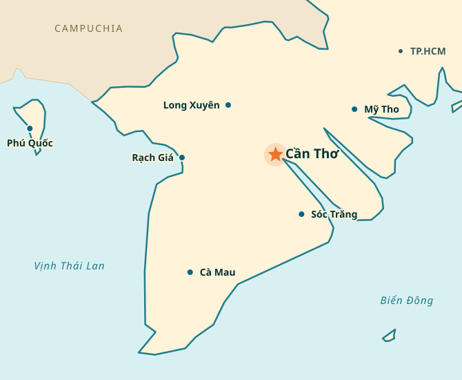

Bản hiệu chỉnh học thuật • 21 tháng 10 năm 2026Đỗ Thùy Hương · Phan Anh Tú
01Định vị chiến lược
BizOn là sáng kiến phát triển vùng thông qua giáo dục khởi nghiệp, không chỉ là nền tảng công nghệ giáo dục (EdTech). Giá trị của BizOn được xem xét theo chuỗi kết quả có bằng chứng: từ trải nghiệm mô phỏng, năng lực ra quyết định, đến hành động khởi nghiệp và đóng góp dài hạn cho vùng.
Luận điểm nền tảng:
Đồng bằng sông Cửu Long (ĐBSCL) không thiếu người tài, nhưng còn thiếu môi trường và cơ hội để người tài phát huy năng lực, đặc biệt thông qua hoạt động tạo lập và phát triển doanh nghiệp. BizOn góp phần thu hẹp khoảng trống này bằng giáo dục dựa trên trải nghiệm và dữ liệu.

Đồng bằng sông Cửu Long
02Tầm nhìn chính thức — Phương án 1
Một Đồng bằng sông Cửu Long nơi người trẻ không phải rời quê mới có thể lập nghiệp. Họ khởi nghiệp trên chính đất phù sa, tạo chỗ đứng cho người tài của vùng và đưa sản phẩm Việt ra thế giới.
EN A Mekong Delta where young people do not have to leave home to build a livelihood. They start enterprises on their own soil, create opportunities for regional talent, and bring Vietnamese products to the world.
Định hướng xuyên suốt:kết nối cơ hội lập nghiệp tại vùng với năng lực cạnh tranh quốc tế; nhất quán với Hộ Chiếu Thương Hiệu, Hộ Chiếu Sầu Riêng và khẩu hiệu “Từ Việt Nam ra thế giới”. Tầm nhìn không đồng nghĩa với yêu cầu người trẻ phải ở lại quê.
03Cơ sở lý thuyết và lộ trình chuyển hóa kết quả
BizOn vận dụng hai logic ra quyết định khởi nghiệp có tính bổ trợ (Sarasvathy, 2001), đặt trong môi trường học qua trải nghiệm (Kolb, 1984) và rèn luyện năng lực tự tin hành động (Bandura, 1977). Trọng tâm không dừng ở mong muốn khởi nghiệp, mà là chất lượng quyết định và khả năng triển khai bước đi thực tế.
Causation
lập kế hoạch theo mục tiêu
Câu hỏi định hướng
Mục tiêu nào cần đạt? Cần phân tích thị trường, dự báo và phân bổ nguồn lực ra sao?
Ứng dụng trong mô phỏng
Lựa chọn thị trường mục tiêu, tính giá thành và điểm hòa vốn, dự báo doanh thu, lập phương án kinh doanh.
Effectuation
hành động từ nguồn lực sẵn có
Câu hỏi định hướng
Tôi là ai, biết gì, quen ai? Có thể thử nghiệm điều gì với tổn thất chấp nhận được?
Ứng dụng trong mô phỏng
Bắt đầu từ nguồn lực hiện có, tìm đối tác, thử nghiệm khách hàng, điều chỉnh hướng đi theo phản hồi và tình huống bất định.
CausationEffectuation
lập kế hoạch theo mục tiêuhành động từ nguồn lực sẵn có
Hai logic không loại trừ nhau: người học lựa chọn và phối hợp theo mục tiêu, nguồn lực và mức độ bất định của từng tình huống. McMullen và Shepherd (2006) gợi mở việc quan sát quyết định hành động dưới bất định; Gollwitzer (1999) nhấn mạnh chuyển mục tiêu thành kế hoạch hành động cụ thể.
Lộ trình bốn mắt xích: từ trải nghiệm đến đóng góp vùng
Ghi nhận trực tiếpChỉ kết luận BizOn góp phần thúc đẩy
1. Trải nghiệm
Kết quả và bằng chứng cần thu thập
Người học thực hiện các vòng mô phỏng và đưa ra lựa chọn kinh doanh. Bằng chứng: nhật ký lớp, dữ liệu quyết định, rubric bốn mức.
Giới hạn kết luận
Ghi nhận trực tiếp.
2. Năng lực
Kết quả và bằng chứng cần thu thập
Cải thiện chất lượng quyết định, khả năng dự báo, thích ứng và đánh giá hệ quả. Đo trước–sau, chấm rubric; ưu tiên nhóm so sánh.
Giới hạn kết luận
Đánh giá được thay đổi; cần thiết kế phù hợp để xác định ảnh hưởng của BizOn.
3. Quyết định và hành động
Kết quả và bằng chứng cần thu thập
Người học lựa chọn theo đuổi, điều chỉnh hoặc tạm dừng cơ hội kinh doanh có căn cứ; thực hiện bước kiểm chứng (phỏng vấn khách hàng, thử nghiệm giá, mẫu sản phẩm/MVP hoặc kết nối đối tác).
Giới hạn kết luận
Kiểm chứng bằng hành vi; không đồng nhất với việc thành lập doanh nghiệp.
4. Đóng góp vùng
Kết quả và bằng chứng cần thu thập
Cơ hội việc làm, doanh nghiệp mới, liên kết sản xuất–kinh doanh và khả năng lập nghiệp tại ĐBSCL; theo dõi sau 12–24 tháng.
Giới hạn kết luận
Chỉ kết luận BizOn góp phần thúc đẩy, không khẳng định là nguyên nhân duy nhất.
1. Trải nghiệm — Người học thực hiện các vòng mô phỏng và đưa ra lựa chọn kinh doanh. Bằng chứng: nhật ký lớp, dữ liệu quyết định, rubric bốn mức.Ghi nhận trực tiếp.
2. Năng lực — Cải thiện chất lượng quyết định, khả năng dự báo, thích ứng và đánh giá hệ quả. Đo trước–sau, chấm rubric; ưu tiên nhóm so sánh.Đánh giá được thay đổi; cần thiết kế phù hợp để xác định ảnh hưởng của BizOn.
3. Quyết định và hành động — Người học lựa chọn theo đuổi, điều chỉnh hoặc tạm dừng cơ hội kinh doanh có căn cứ; thực hiện bước kiểm chứng (phỏng vấn khách hàng, thử nghiệm giá, mẫu sản phẩm/MVP hoặc kết nối đối tác).Kiểm chứng bằng hành vi; không đồng nhất với việc thành lập doanh nghiệp.
4. Đóng góp vùng — Cơ hội việc làm, doanh nghiệp mới, liên kết sản xuất–kinh doanh và khả năng lập nghiệp tại ĐBSCL; theo dõi sau 12–24 tháng.Chỉ kết luận BizOn góp phần thúc đẩy, không khẳng định là nguyên nhân duy nhất.
Nguyên tắc bằng chứng:“Đo được” không đồng nghĩa “do BizOn gây ra”. Đối với kết quả dài hạn, sử dụng “BizOn góp phần thúc đẩy…” và kiểm tra các yếu tố ảnh hưởng khác theo tiếp cận phân tích đóng góp của Mayne (2012).
04Sứ mệnh
BizOn thúc đẩy năng lực lựa chọn và hành động khởi nghiệp thông qua giáo dục dựa trên mô phỏng, đồng thời tạo nền tảng dữ liệu chung cho phối hợp “Ba nhà” (nhà trường – doanh nghiệp – chính quyền).
Nhà trườngDoanh nghiệpChính quyềnDữ liệu chung
Phối hợp “Ba nhà”
BizOn đưa trải nghiệm ra quyết định kinh doanh đến mọi giảng đường ĐBSCL thông qua các mô phỏng có khả năng giải thích, gắn với sản vật, thị trường và thể chế của vùng.
Qua đó:
Người học biết phân tích cơ hội, đưa ra quyết định và thực hiện bước khởi nghiệp đầu tiên;
Giảng viên đo lường năng lực ra quyết định và minh chứng hành động bằng dữ liệu;
Nhà trường, doanh nghiệp và chính quyền chia sẻ bằng chứng để phối hợp hành động.
EN BizOn aims to bring business decision-making experiences to classrooms across the Mekong Delta through explainable simulations grounded in the region’s products, markets, and institutions. Learners evaluate opportunities, make entrepreneurial decisions, and take initial steps toward venture creation; instructors assess decision quality and observable actions using data; and universities, businesses, and government agencies share evidence to coordinate action.
Hàm ý triển khai
Nội dung
Hàm ý chiến lược
Phạm vi giảng đường ĐBSCL
Từng bước mở rộng độ phủ, theo dõi số cơ sở đào tạo, học phần và người học.
Bối cảnh sản vật, thị trường và thể chế
Lấy sầu riêng, chợ nổi, mã số vùng trồng và kinh tế sông nước làm tình huống kinh doanh có thể ra quyết định.
Kết nối “Ba nhà”
Định hướng Institution Pass, Research Edition và hợp tác với Sở Khoa học và Công nghệ trên nền tảng bằng chứng thực tế.
Cấu trúc sứ mệnh phù hợp bốn nhóm người dùng: sinh viên, giảng viên, nhà nghiên cứu và nhà trường/đối tác.
05Giá trị cốt lõi
Năm giá trị cốt lõi được giữ nguyên, với trọng tâm thực hành, tính minh bạch và trách nhiệm khi công bố tác động.
Nội hàm thực hiện
Thiết kế tình huống từ bài toán kinh doanh của ĐBSCL, gắn cơ hội vùng với thị trường và chuỗi giá trị quốc tế.
Nội hàm thực hiện
Bảo đảm cơ hội tiếp cận cho cơ sở đào tạo ngoài trung tâm; ưu tiên miễn phí cho học tập, khả năng sử dụng ngoại tuyến và công nghệ PWA.
Nội hàm thực hiện
Tạo môi trường an toàn để thử, sai, điều chỉnh và học cách chịu trách nhiệm đối với quyết định kinh doanh.
Nội hàm thực hiện
Giải thích logic lựa chọn, kết quả mô phỏng và tiêu chí đánh giá; cung cấp dữ liệu tổng hợp phục vụ đối thoại chính sách khi phù hợp.
Nội hàm thực hiện
Công bố đúng phạm vi bằng chứng: kết quả trực tiếp, thay đổi được đánh giá và đóng góp dài hạn; không phóng đại tác động.
Tuyên ngôn giá trị:“Chúng tôi bắt đầu từ phù sa, tôn trọng từng người học, dạy bằng hệ quả, giải thích mọi kết quả và chỉ nói điều bằng chứng cho phép.”
06Khung chỉ báo kết quả và đóng góp đến năm 2030
Chỉ báo ưu tiên minh chứng quyết định và hành động thực tiễn, không sử dụng câu trả lời về mong muốn làm thước đo thay thế cho hành vi khởi nghiệp. Chỉ tiêu định lượng năm 2030 tiếp tục để nhóm dự án thống nhất.
Cấp độ
Độ phủMục tiêu 2030: [Chờ chốt]
Chỉ báo ưu tiên
Số cơ sở đào tạo, học phần, lớp tham gia tại ĐBSCL; tỷ lệ cơ sở ngoài Cần Thơ.
Nguồn dữ liệu
Đăng ký thí điểm; nhật ký lớp.
Năng lựcMục tiêu 2030: [Chờ chốt]
Chỉ báo ưu tiên
Mức cải thiện kiến thức, chất lượng quyết định và năng lực ứng dụng causation/effectuation; mức đạt CLO.
Nguồn dữ liệu
Pre/post-test 15 câu; rubric; dữ liệu mô phỏng.
Hành độngMục tiêu 2030: [Chờ chốt]
Chỉ báo ưu tiên
Tỷ lệ người học có quyết định kinh doanh được giải trình; thực hiện ≥1 bước kiểm chứng cơ hội (khách hàng, thử nghiệm giá, MVP, đối tác).
Nguồn dữ liệu
Nhật ký quyết định; minh chứng sản phẩm; nhật ký dự án.
Theo dõiMục tiêu 2030: [Chờ chốt]
Chỉ báo ưu tiên
Tỷ lệ cựu người học thực hiện dự án/khởi nghiệp hoặc làm việc tại ĐBSCL sau 12 và 24 tháng; ghi nhận lựa chọn địa bàn lập nghiệp.
Nguồn dữ liệu
Khảo sát theo dõi (tracer study); mạng lưới cựu người học.
Hệ sinh tháiMục tiêu 2030: [Chờ chốt]
Chỉ báo ưu tiên
Số doanh nghiệp, hợp tác xã đồng thiết kế kịch bản; số lần dữ liệu BizOn được sử dụng trong đối thoại chính sách.
Nguồn dữ liệu
Biên bản hợp tác; văn bản tham vấn.
Thiết kế đo lường:phân biệt quyết định trong mô phỏng với hành động ngoài thực tế; chỉ ghi nhận hành động có minh chứng. Ưu tiên nhóm so sánh, khảo sát theo dõi 12–24 tháng và đồng thuận tham gia nghiên cứu. Thí điểm KT330H và KT301H cần bổ sung phiếu ghi nhận quyết định, bước kiểm chứng cơ hội và lựa chọn địa bàn lập nghiệp.
07Rủi ro và biện pháp giảm thiểu
Rủi ro trọng yếu là diễn giải quá mức vai trò của BizOn đối với hình thành doanh nghiệp và quyết định di cư, vốn chịu tác động của nhiều điều kiện kinh tế, xã hội và thể chế.
Rủi ro
Bị xem là sáng kiến chỉ phục vụ địa phương
Biện pháp giảm thiểu
Duy trì định hướng đưa sản phẩm Việt ra thế giới; phát triển ĐBSCL thành phòng thí nghiệm sống (living lab) có thể chuyển giao.
Rủi ro
Nhầm tiến bộ học tập với khởi nghiệp thực tế; phóng đại tác động xuất cư
Biện pháp giảm thiểu
Phân tầng bằng chứng; kiểm chứng hành động ngoài mô phỏng; chỉ sử dụng ngôn ngữ đóng góp cho tác động dài hạn.
Rủi ro
Xung đột lợi ích giữa vai trò chuyên gia chính sách và đồng sáng lập
Biện pháp giảm thiểu
Tách vai khi truyền thông; công khai quan hệ đồng sáng lập khi trích dẫn kết quả từ BizOn.
Rủi ro
Phụ thuộc nguồn tài trợ công
Biện pháp giảm thiểu
Duy trì nguyên tắc “miễn phí cho học, có phí cho đồng hành” nhằm bảo vệ quyền tiếp cận.
08Ưu tiên triển khai tiếp theo
Thiết kế các tình huống buộc người học lựa chọn giữa lập kế hoạch theo mục tiêu (causation) và hành động từ nguồn lực sẵn có (effectuation).
Hoàn thiện rubric chất lượng quyết định, nhật ký hành động và công cụ theo dõi 12–24 tháng cho thí điểm KT330H, KT301H.
Chốt chỉ tiêu 2030; hoàn thiện trang “Về BizOn” gồm công bố về cố vấn AI và nguyên tắc miễn phí/trả phí.
Chuẩn bị sơ đồ lý thuyết thay đổi và bộ bằng chứng phục vụ trao đổi với Sở Khoa học và Công nghệ, đối tác và nhà tài trợ.
09Cơ sở học thuật và tài liệu liên quan
•
Sarasvathy, S. D. (2001). Causation and effectuation: Toward a theoretical shift from economic inevitability to entrepreneurial contingency. Academy of Management Review, 26(2), 243–263. https://doi.org/10.5465/amr.2001.4378020
•
McMullen, J. S., & Shepherd, D. A. (2006). Entrepreneurial action and the role of uncertainty in the theory of the entrepreneur. Academy of Management Review, 31(1), 132–152. https://doi.org/10.5465/amr.2006.19379628
•
Kolb, D. A. (1984).Experiential learning: Experience as the source of learning and development. Prentice Hall.
Lưu ý: các khung lý thuyết bổ sung có vai trò định hướng thiết kế và đánh giá; hiệu quả thực tế của BizOn chỉ được khẳng định khi có dữ liệu nghiên cứu phù hợp.